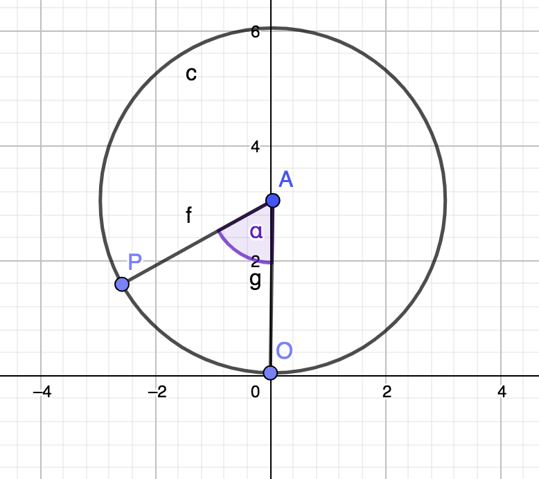

In order to have the formula parametrization for the curve drawn by P moving, we have to understand how it moves.
This curve is a combination of two movements:
1. rotation around the center of the circle
2. movement because of turning of the whole circle in the direction of increasing x values
It is worth noticing that the second movement doesn't influence how th y value of P will change.
Let's produce formula for P points but without taking under consideration movement 2.

We can express Py using α:
cos(-α) = (R - Py) / R
sin(-α) = (Px) / R
Px = R * sin(-α)
Py = R * (1 - cos(-α))
Now let's go back to the movement 2. The speed of turning of the circle doesn't change.
The speed is constant. The circle makes one circle (2PI*R) in 2PI angle.
That's why we need to add * R to the formula for Px.
Px = R * sin(-α) + α * R
In the final, the parametrization is following:
Px = R * sin(-α) + α * R
Py = R * (1 - cos(-α))